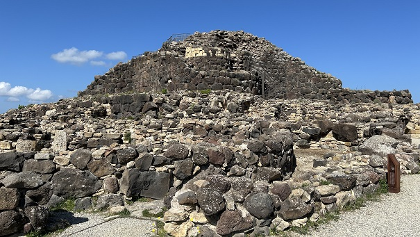
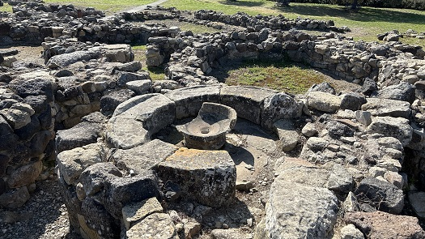
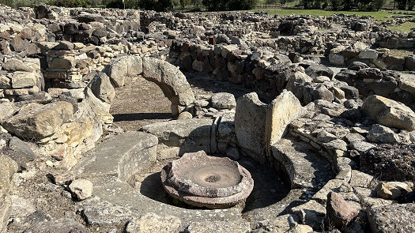
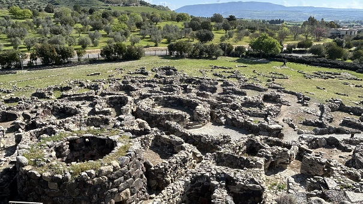
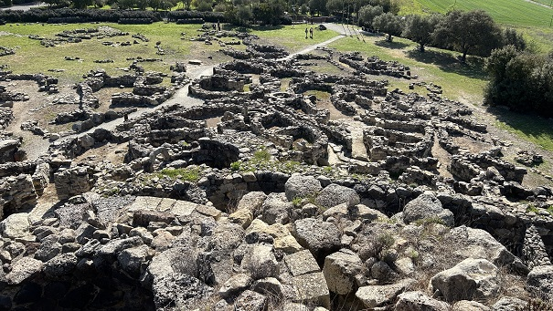
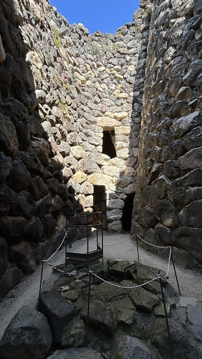

|
SU NURAXI
El complejo nurágico de Su Nuraxi de
Barumini situado en el centro-sur e interior de Cerdeña es uno de los
nuraghe más representativos y mejor conservados de la isla.
El área arqueológica está formada por
un complejo nurágico con su torre central y cuatro torres perimetrales,
una muralla y la población de época nurágica y púnico-romana.
Las fotografías más antiguas de Su Nuraxi datan de 1937, en estado de
derrumbamiento y con el aspecto de una pequeña colina.
La excavación del lugar, llevada a
cabo bajo la dirección del arqueólogo Giovanni Lilliu desde 1951 hasta
1956, permitió identificar las fases de vida que demuestran la ocupación
del lugar desde mediados del 1600 a.e.c. hasta el siglo III.
En el siglo V a.e.c, el poblado fue saqueado y destruido por los
cartagineses. Posteriormente se estableció un nuevo poblado, con casas
construidas con piedra más pequeña y con más de una estancia, que fue
habitado hasta la época romana antes de ser abandonado. Se desconoce la
causa de su abandono.
El principal material utilizado para
su construcción es el basalto, una piedra volcánica muy dura procedente
de la meseta de Giara.
Según la mayoría de los arqueólogos
los nuraghe eran edificios polivalentes construidos para el control del
territorio y sus recursos.
En la actualidad, la torre central, tholos, cuenta con una altura
aproximada de unos 14 metros y dos ambientes superpuestos. A su
alrededor está el bastión cuadrilobulado, con cuatro torres unidas por
una muralla orientadas hacia los cuatro puntos cardinales. En medio del
patio central hay un pozo de agua de manantial
Un lugar único, que la Unesco declaró Patrimonio de la Humanidad en
1997.
La visita es guiada.
También recomendamos visitar el Museo Casa Zapata donde está el Su
Nuraxi 'e Cresia.
Hasta ahora, se han estudiado más de 7000 nuraghi en toda la isla y una
treintena aparecen en el territorio de Barumini.

| |
|
|
 |
 |
| |
|
|
 |
 |

Mas info:
https://www.fondazionebarumini.it/it/
|